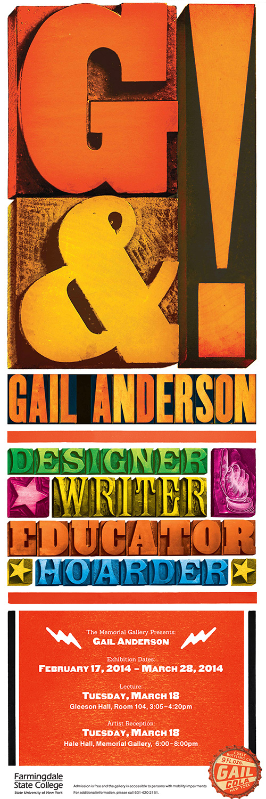

Biografía
Gail Anderson es una diseñadora, escritora y educadora proveniente del Bronx de Nueva York. Lleva una carrera profesional de más de treinta años de experiencia en la que no sólo ha diseñado para clientes reconocidos como Rolling Stone, Penguin, BBC, School of Visual Arts (SVA) y SpotCo sino que ha influido en generaciones de diseñadores a través de sus largos años de enseñanza en la SVA. Ha ganado diversos reconocimientos, entre ellos dos reconocimientos ‘Lifetime Achievement’ que honran toda una vida de logros. Ha escrito unos diez libros junto a Steven Heller sobre Tipografía.
Trayectoria
- Actualmente tiene un estudio de diseño junto con Joe Newton llamado Anderson Newton Design, ‘AND’.
- Trabajó del 2002 al 2010 como directora creativa en SpotCo, una agencia de publicidad en NY que se centra en arte para espectáculos de Broadway y teatro.
- Desde 1987 al 2002 trabajó primero llegando a la posición de directora de arte senior en la revista Rolling Stone.
- Comienzos como diseñadora en The Boston Globe Sunday Magazine y Vintage Books de Random House.
- Enseña en la School of Visual Arts MFA a nivel de grado y secundaria. Ha servido como jurado en concursos de diseño y forma parte del Type Directors Club y del Citizen’s Stamp Advisory Committee para el servicio postal de EEUU. Allí ayuda a seleccionar las estampillas que se usan para pegar en los sobres.